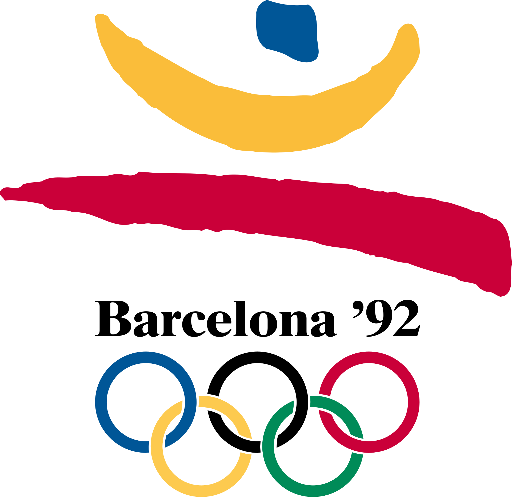
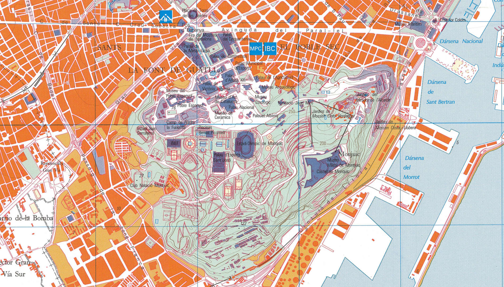
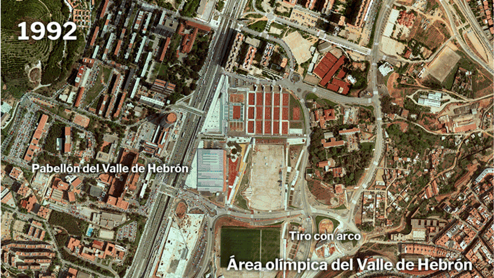

Wenn heute eine Stadt sich um die Olympischen Spiele bewirbt, fällt früher oder später ein Name: Barcelona. Kaum ein anderer Austragungsort wird so oft als Blaupause für „richtig gemachte" Olympia-Stadtentwicklung zitiert. Der Sporthistoriker Andrew Zimbalist bringt es auf den Punkt: Barcelona sei das „poster child" für Städte, die mit Olympia wirklich etwas anfangen konnten – jede neue Bewerberstadt studiert und versucht zu kopieren, was Barcelona 1992 gelungen ist.
Ich habe mir für ein Referat genauer angeschaut, was an dieser Erfolgsgeschichte dran ist – und was dabei gerne übersehen wird.
Eine Stadt mit Nachholbedarf
Um zu verstehen, warum die Spiele 1992 so einen Unterschied gemacht haben, muss man kurz zurück. Barcelona kam aus der Franco-Diktatur (bis 1975) und einer unruhigen Übergangszeit – Putschversuch 1981, der „Pacto del Olvido", die langsame Demokratisierung. Stadtteile wie Poblenou waren geprägt von Industrieruinen und informellem Wohnungsbau, dem sogenannten Chabolismo, den selbstgebauten Slums, wie man sie auch aus Madrid kannte.
1986 kamen zwei Ereignisse zusammen, die Spaniens internationale Öffnung markierten: die Fußball-WM im eigenen Land und der EU-Beitritt. Mittendrin: die Bewerbung für Olympia 1992, eingebracht bereits am 30. Juni 1981 von Bürgermeister Narcís Serra. Sein Nachfolger Pasqual Maragall trieb das Projekt voran, unterstützt von einem der umstrittensten Strippenzieher der Sportgeschichte: Juan Antonio Samaranch, IOC-Präsident und einst Sportminister unter Franco, der sein Netzwerk in Osteuropa für die entscheidenden Stimmen nutzte.
Die Wahl in Lausanne – und ein Schatten über den Spielen
Im Oktober 1986 setzte sich Barcelona gegen Paris, Belgrad und Brisbane durch – mit 47 von möglichen Stimmen im letzten Wahlgang, trotz eines im Vergleich moderaten Budgets. Die New York Times beschrieb die Stadt damals bereits als klaren Favoriten, die schon 80 Prozent der nötigen Anlagen gebaut hatte.

Was in vielen Rückblicken fehlt: Im Juni 1992, kurz vor Eröffnung der Spiele, ließ die spanische Regierung im Rahmen der „Operación Garzón" 45 Personen festnehmen, die der katalanischen Unabhängigkeitsbewegung nahestanden – ohne belastbare Beweise, mit Foltervorwürfen mehrerer Gefangener. Das Kalkül: keine politischen Zwischenfälle während der Spiele, durchgesetzt mit massiver Polizeipräsenz. Eine unangenehme Randnotiz zu einem Ereignis, das sonst als Lehrbuchbeispiel gilt.
Stadtplanung als eigentlicher Olympiagewinn
Der eigentlich interessante Teil der Geschichte ist aber gar nicht der Sport. COOB'92, das organisierende Komitee, formulierte es so:
„The Games must be at the service of the city; the city must not be at the service of the games, because the Games are temporary, and the cities are permanent."
Stadtplanung war in Barcelona kein Olympia-Nebenprodukt, sondern lief der Bewerbung voraus: General Metropolitan Plan (1976), Special Interior Reform Plans (1980–1986), New Centre Plans – alles Projekte, die unabhängig von Olympia ihren Sinn gehabt hätten und genau deshalb auch ohne erfolgreiche Bewerbung weiterverfolgt worden wären.

Das Kernstück der Infrastruktur war der Ring aus Stadtautobahnen – Ronda de Dalt und Ronda Litoral –, der die vier Olympia-Areale miteinander verband. Olympia war hier, salopp gesagt, die politische Ausrede, ein Projekt endlich fertigzustellen, das man sich schon lange vorgenommen hatte.
Vorher – Nachher: Vall d'Hebron als Beispiel
Nirgendwo wird der Wandel so plastisch wie in Luftaufnahmen. Das Gebiet rund um Vall d'Hebron etwa war vor den Spielen kaum erschlossen – danach Heimat von Velodrom, Bogenschießanlage und Tennisanlagen.

Auch andernorts wurde wiederverwendet statt neu gebaut: das Estadi Olímpic auf dem Montjuïc stammt ursprünglich von 1929 und wurde für die Spiele 1992 grundlegend saniert; Camp Nou und Palau Blaugrana von FC Barcelona waren bereits von der WM 1982 vorhanden und mussten nur für Fußball, Judo und Taekwondo angepasst werden.
Das größte Symbol: die Öffnung zum Meer
Der vielleicht nachhaltigste Effekt der Spiele war die Schaffung des Olympischen Dorfs am Strand – auf einem Areal, das vorher ein verlassenes Industriedreieck zwischen Bahngleisen und einem Regenwasserkanal war. Die nachträgliche Bilanz beschreibt es so:
„...the city could be finally opened to the sea. The reward was that, after the Games, Barcelona would have 4.5 kilometres of beaches with an urban front open to the Mediterranean."
Vier Kilometer Strand für eine Stadt, die vorher praktisch keinen Zugang zum Meer hatte – das ist die Art von Vermächtnis, die andere Olympiastädte bis heute zu kopieren versuchen.
Aber: Erfolg für wen?
Hier wird es kritisch, und genau das macht die Geschichte interessanter als die übliche Erfolgserzählung. Die Stadtumgestaltung mag aus Sicht der Verantwortlichen ein Erfolg gewesen sein – aus Sicht der Bürger sah das anders aus.
Eine Reportage des Spiegel von 1991 beschreibt, wie im ehemaligen Arbeiterviertel Poble Nou rund 2.000 Wohnungen entstanden, größtenteils nicht sozial, sondern auf dem freien Markt vermarktet – mit der Folge, dass sich Anwohner verdrängt fühlten. Die britische Rechtswissenschaftlerin Claire Mahon kommt in ihrer Untersuchung zu einem ähnlichen Schluss:
„No citizen participation was sought in this process of urban transformation, and was only later introduced in response to citizen demands during the construction phase."
Bürgerbeteiligung gab es also nicht von Anfang an – sie musste erst erkämpft werden. Die New York Times zitierte 1992 einen Ladenbesitzer aus der Gotischen Altstadt, der die Sache pragmatisch sah: Nach allem, was die Stadt durchgemacht habe, sei es doch auch mal Zeit für ein bisschen Spaß.
Fazit
Barcelona '92 zeigt zwei Dinge gleichzeitig, und beide sind wahr: Die Spiele waren ein städtebaulicher Erfolg – Infrastruktur, Küstenzugang und internationale Sichtbarkeit, die ohne den Zeitdruck und die Finanzierung durch Olympia kaum in dieser Geschwindigkeit entstanden wären. Gleichzeitig war dieser Umbau in weiten Teilen eine Top-down-Entscheidung, bei der die Bevölkerung kaum mitbestimmen konnte und sozialer Wohnraum eher Nebensache war.
Die Frage, die am Ende offenbleibt, lässt sich auf jede künftige Olympiabewerbung übertragen: Ist eine Stadtentwicklung dieses Ausmaßes überhaupt ohne Konflikte mit der eigenen Bevölkerung möglich?